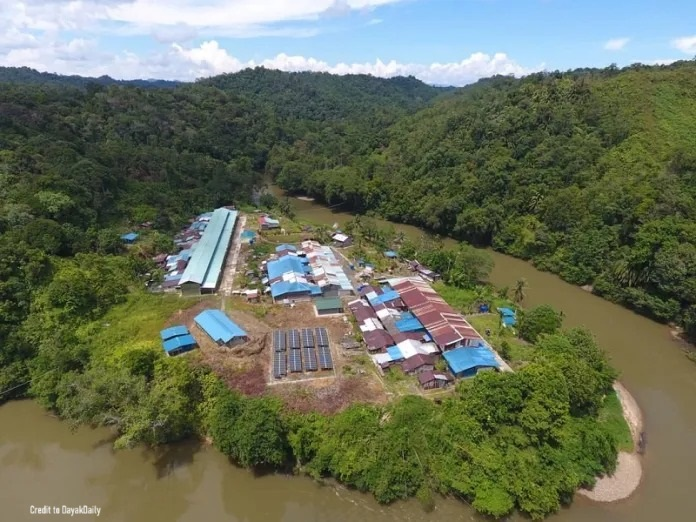

Interesting Places in Sri Aman
Sri Aman is a district in Sarawak, Malaysia, and it's a treasure trove of natural and cultural wonders. One of the most fascinating places to visit is the Sri Aman Longhouse, a traditional Iban longhouse that showcases the rich culture and traditions of the Iban people. The longhouse is situated amidst lush rainforest and offers breathtaking views of the surrounding landscape. Visitors can explore the longhouse, learn about the Iban way of life, and even participate in traditional activities such as making blowpipes and basket-weaving.
The Sri Aman Tidal Bore, known locally as "Benak," is another unique attraction. This natural phenomenon occurs along the Batang Lupar River, where the tidal bore creates waves that can travel several kilometers upriver. The Tidal Bore Festival is held annually, attracting both locals and tourists to witness this spectacular event and participate in various cultural and recreational activities.

Location
Sri Aman is located in the east of Malaysia which is in Sarawak in the land of Borneo. It is a small town located in the Upper Rejang Division of Sarawak, Malaysia. Simanggang is a town and the capital of Sri Aman District and Sri Aman Division in Sarawak. It is located near the Lupar River, 193 kilometres (120 mi), a three-hour drive, from Kuching, the capital of Sarawak. The town is nestled in the heart of the Borneo rainforest and is accessible only by road or river. The nearest airport is in Sibu, which is a 2-hour drive away. The specific coordinates of Sri Aman is 1°14′7″N 111°28′11″E in the world map. The town is surrounded by lush forests and rolling hills, making it a popular destination for outdoor enthusiasts who love hiking, trekking, and camping.